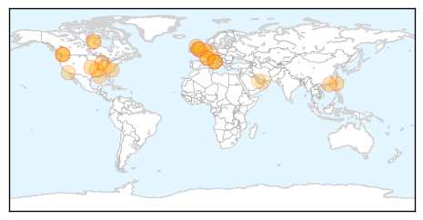
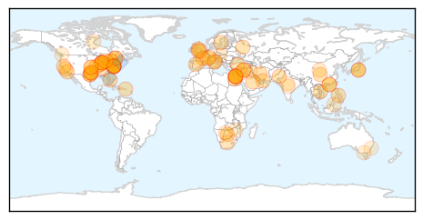

Influenza
30-Day Web Trend
5 alerts, 0 warnings

30-Day Twitter Trend
0 alerts, 0 warnings

Article Locations
Article Confidences

Top Articles:
- 1.000
- CDC says flu shots may not be good match for 2014-15 virus
- 0.998
- Number of Flu Cases Increasing in Kentucky
- 0.997
- CDC: Dominance of H3N2 viruses may portend more deaths this flu season
- 0.997
- Latest strain of equine flu poses serious problems
- 0.991
- Get flu shots now, health experts warn public
- 0.989
- Animal health body calls for more spending on disease detection
- 0.980
- World Health Group Calls More Spending on Disease Detection in Animals
- 0.964
- Healthy birds to be euthanized as avian flu probe continues
- 0.954
- Baxter County flu shot clinic set for Friday
- 0.947
- Flu complications risky for preemies
- 0.937
- European agency clears Novartis vaccine in Italy scare
- 0.936
- Avian flu outbreak hits two British Columbia farms (Update)
- 0.935
- Avian flu quarantine expands as Hong Kong bans some B.C. poultry
- 0.904
- Avian flu quarantine expands to 4 Fraser Valley farms
- 0.897
- FOX 8 WVUE New Orleans News, Weather, Sports, Social
- 0.879
- New bird flu case in Netherlands
- 0.841
- Four B.C. poultry farms quarantined for avian flu
- 0.831
- Health Officials: Get your influenza shot
- 0.819
- Avian flu outbreak hits 2 British Columbia farms
- 0.763
- Asian markets restrict Canadian poultry after bird flu outbreak - Business News
- 0.746
- Asian markets restrict Canadian poultry after bird flu outbreak
- 0.745
- Two more farms in B.C. under quarantine as officials try to contain avian flu
- 0.739
- Saudi- MoH allays vaccine fears says influenza shots 'perfectly safe'
- 0.686
- High alert on bird flu
- 0.632
- 'No evidence' Fluad flu vaccine caused deaths in Italy
- 0.601
- MoH allays vaccine fears, says influenza shots 'perfectly safe'Healthcare
- 0.579
- No winter blues in Dubai, just the sniffles
Top Tweets:
-
No tweets found for Dec 03, 2014
Unknown
30-Day Web Trend
1 alerts, 0 warnings

30-Day Twitter Trend
1 alerts, 0 warnings

Article Locations
Article Confidences

Top Articles:
- 0.992
- UPDATE 1-Egyptian dies of H5N1 bird flu, bringing total to 7-health ministry
- 0.980
- CDC expert says enterovirus may have caused paralysis
- 0.979
- Dallas County offers free flu shots for uninsured residents
- 0.972
- Egypt on alert over bird flu
- 0.960
- Dallas County confirms first flu death
- 0.944
- Egypt Reports 4 New Bird Flu Deaths
- 0.942
- HIV may become less infectious over time, study says
- 0.941
- Egypt Reports Four New Bird Flu Deaths — Naharnet
- 0.933
- New Lyme Disease Vaccine Shows Promise In Preventing Bacterial Sources Of Infection
- 0.921
- Flu season arrives in Ottawa with 5 confirmed cases so far
- 0.917
- Chicago Tribune
- 0.917
- Chicago Tribune
- 0.917
- Chicago Tribune
- 0.917
- Chicago Tribune
- 0.917
- Chicago Tribune
- 0.917
- Chicago Tribune
- 0.917
- Chicago Tribune
- 0.917
- Chicago Tribune
- 0.917
- Chicago Tribune
- 0.917
- Chicago Tribune
- 0.917
- Chicago Tribune
- 0.917
- Chicago Tribune
- 0.917
- Chicago Tribune
- 0.917
- Chicago Tribune
- 0.917
- Chicago Tribune
- 0.917
- Chicago Tribune
- 0.917
- Chicago Tribune
- 0.917
- Chicago Tribune
- 0.917
- Chicago Tribune
- 0.917
- Chicago Tribune
- 0.917
- Chicago Tribune
- 0.917
- Chicago Tribune
- 0.917
- Chicago Tribune
- 0.917
- Chicago Tribune
- 0.917
- Chicago Tribune
- 0.917
- Chicago Tribune
- 0.917
- Chicago Tribune
- 0.917
- Chicago Tribune
- 0.917
- Chicago Tribune
- 0.917
- Chicago Tribune
- 0.917
- Chicago Tribune
- 0.917
- Chicago Tribune
- 0.917
- Chicago Tribune
- 0.917
- Chicago Tribune
- 0.917
- Chicago Tribune
- 0.910
- KFVS12 News & Weather Cape Girardeau, Carbondale, Poplar Bluff
- 0.901
- 580 CFRA News Talk Radio :: Four confirmed cases of the flu in Ottawa as vaccine uptake remains steady :: News
- 0.891
- The Flu outbreak is spreading from Louisiana this year
- 0.888
- 'No evidence' Fluad flu vaccine caused deaths in Italy
- 0.886
- Durham health department finds ticks containing Lyme bacteria in Rouge Valley
Showing top 50 articles...
Top Tweets:
- 0.612
- Sounds like CFIA doesn't yet know the N (neuraminidase) of the H5 avian flu virus responsible for a poultry outbreak in BC's Fraser Valley
- 0.595
- RT: Sounds like CFIA doesn't yet know the N (neuraminidase) of the H5 avian flu virus responsible for a poultry outbreak …